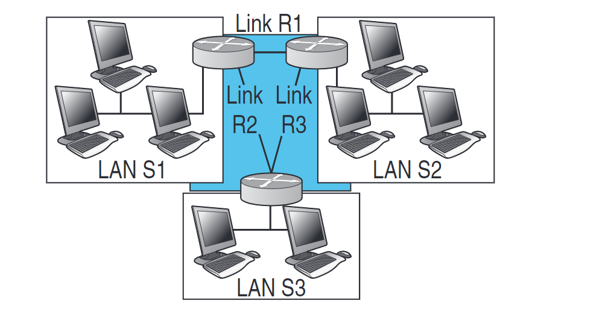

VLSM
Abbiamo visto che dover utilizzare una subnet mask di lunghezza
fissa per ogni indirizzo di rete pone un grosso limite al
subnetting tradizionale: una volta scelta la subnet mask,
si è vincolati a un numero fisso di sottoreti aventi tutte
le stesse dimensioni, generalmente con un enorme spreco di
indirizzi oltre a un’estrema rigidità in caso di evoluzioni
della rete stessa, che potrebbe comportare il rifacimento
completo del piano di indirizza-mento se anche solo una
subnet crescesse al di sopra del numero massimo di host previsti.
Esempio
Poiché le tre reti R1, R2 e R3 necessitano solo di 2 indirizzi
(più 2 di servizio), per esse si può utilizzare una sottorete
con soltanto 2 bit di indirizzamento (11111100) e quindi con
subnet mask 255.255.255.192
(per esempio, indirizzi possibili sono 200.69.96.240/30, 200.69.96.244/30, 200.69.96.248/30).
La rete S1 ha 40 host indirizzati con 6 bit (terzo byte a 1100000): 200.69.96.0/26.
La rete S2 ha 50 host indirizzati con 6 bit (terzo byte a 1100000): 200.69.96.64/26.
La rete S3 ha soli 20 host e quindi bastano 5 bit per indirizzarli (terzo byte a 11100000): 200.69.96.128/27.
Ricapitolando, abbiamo assegnato:
LAN S1: 200.69.96.0/26
LAN S2: 200.69.96.64/26
LAN S3: 200.69.96.128/27
LINK R1: 200.69.96.240/30
LINK R2: 200.69.96.244/30
LINK R3: 200.69.96.248/30
(per esempio, indirizzi possibili sono 200.69.96.240/30, 200.69.96.244/30, 200.69.96.248/30).
La rete S1 ha 40 host indirizzati con 6 bit (terzo byte a 1100000): 200.69.96.0/26.
La rete S2 ha 50 host indirizzati con 6 bit (terzo byte a 1100000): 200.69.96.64/26.
La rete S3 ha soli 20 host e quindi bastano 5 bit per indirizzarli (terzo byte a 11100000): 200.69.96.128/27.
Ricapitolando, abbiamo assegnato:
LAN S1: 200.69.96.0/26
LAN S2: 200.69.96.64/26
LAN S3: 200.69.96.128/27
LINK R1: 200.69.96.240/30
LINK R2: 200.69.96.244/30
LINK R3: 200.69.96.248/30

 Indietro
Indietro